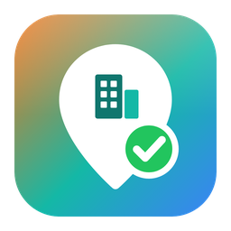

Поиск помещений под пункты выдачи: выгрузка объявлений с Циана, Авито и Baza Winner и проверка зон Ozon, Яндекс Маркета и Wildberries.
| Площадка | Зона | Адрес | Площадь | Цена | Выплата | Проверено |
|---|
Если что-то пошло не так — нажмите «Скопировать для Claude» и вставьте текст в чат.
Задания выполняются, только когда компьютер включён и PVZ Master запущен (можно свёрнутым в трей). Winner должен быть с выполненным входом. Ввести фильтры Авито вручную по расписанию нельзя — для Авито сохраните их в пресете заранее, иначе Авито будет пропущен.